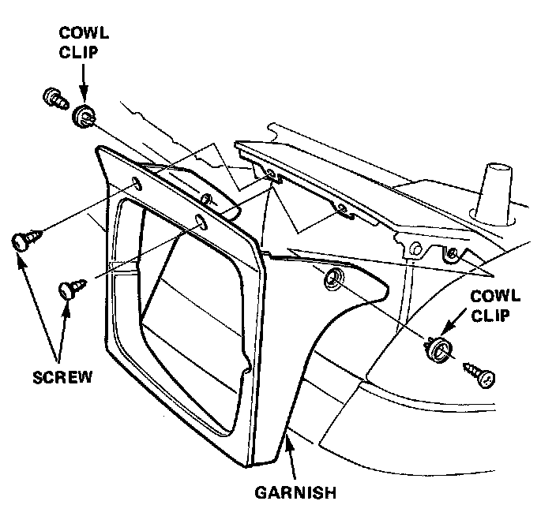
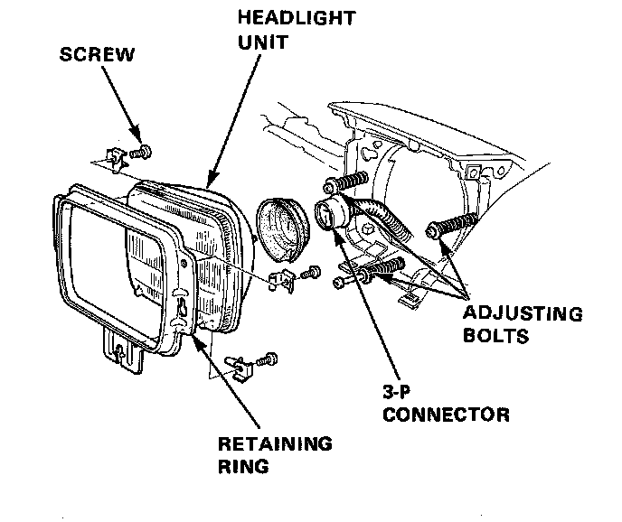

Headlamp: Service and Repair
Headlight Replacement
CAUTION:
- Halogen headlights can become very hot in use; do not touch them or the attaching hardware immediately after they have been turned off.
- Do not try to replace or clean the units with the lights on.

1. Raise the headlights with retractor switch ON.
2. Remove the 2 screws and cowl clips and slide the headlight garnish upward to remove it.
3. Unclip the retaining ring from side adjusting bolts by pushing it forward and upward, then disconnect the 3-P connector from behind the unit to remove it.

4. Remove the 3 screws to remove the retaining ring from the unit.